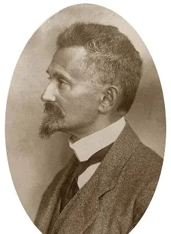
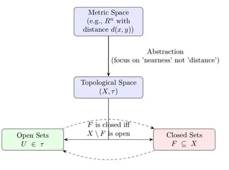

Topology investigates properties of space that are preserved under continuous deformations—such as stretching or bending—without tearing or gluing. It is the ultimate abstraction of geometry, discarding notions of rigid distance to focus entirely on limits and continuity.
In calculus and metric spaces, continuity is defined using distances ($\epsilon$ and $\delta$). Felix Hausdorff (1868–1942) formulated a more abstract and powerful approach by defining spaces entirely through the concept of neighborhoods and open sets.


By declaring which subsets of a space are "open," we immediately inherit rigorous definitions for closed sets, compactness, connectedness, and continuous mappings, establishing the foundational language for modern mathematical analysis.